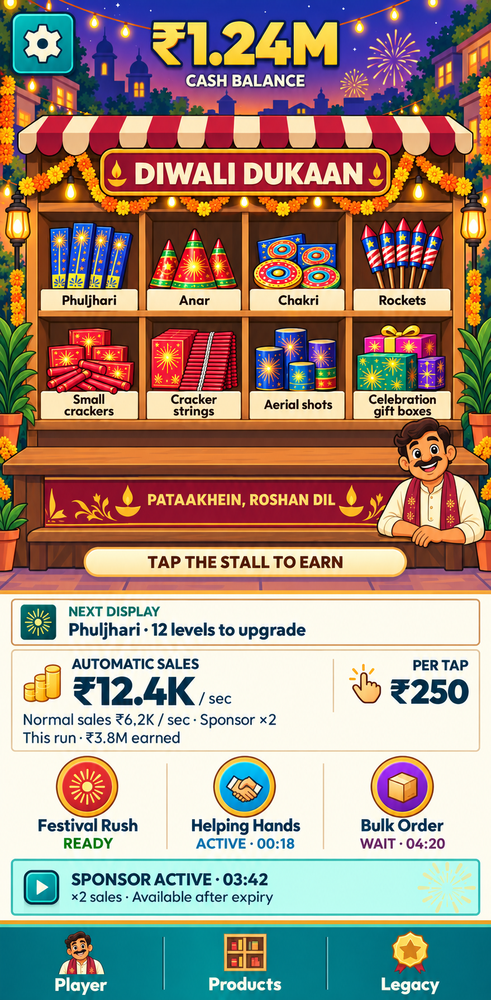
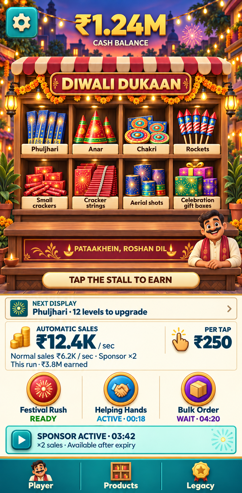
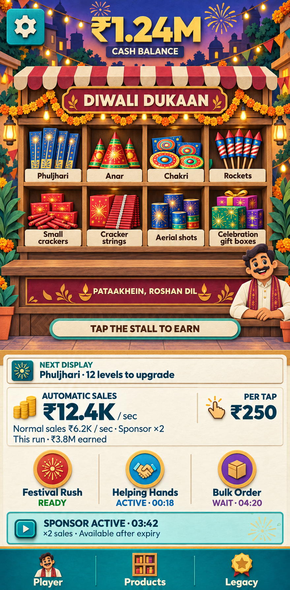
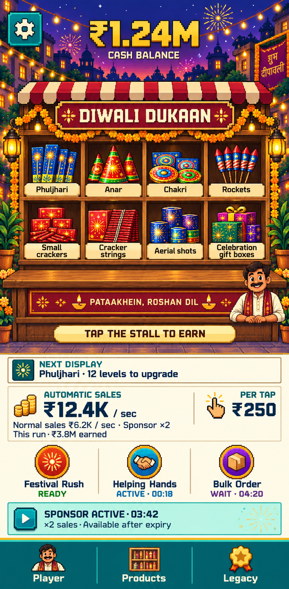
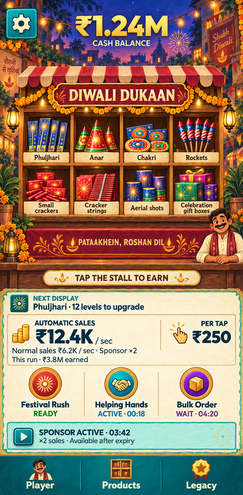
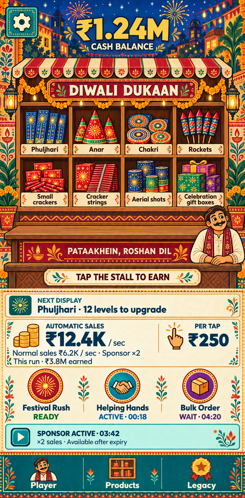

01Clean flat cartoon

Choose the number you prefer. Each candidate redraws the same Home page with a different visual medium. Click an image to inspect it at full size. Portrait design reference: 1080 × 2200.





